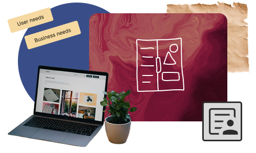

Designing scalable, user-centered SaaS experiences
From research to high-fidelity execution — focused on complex systems, dashboards, and product thinking.

How I Think

CoreView — Workforce Health Monitoring
A B2B SaaS platform for real-time employee health screening and risk control — designed for managers who need to act fast.
Fragmented health data with no single source of truth.
A unified dashboard with role-based access and automated risk scoring.
Finance for Migrants
Strategic redesign of a legacy B2B ecosystem into a unified, research-led platform.
High cognitive load due to fragmented legacy data.
Tiered visual hierarchy and modular design system.
Nubaa Health
Strategic redesign of a legacy B2B ecosystem into a unified, research-led platform.
High cognitive load due to fragmented legacy data.
Tiered visual hierarchy and modular design system.